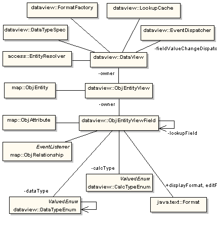
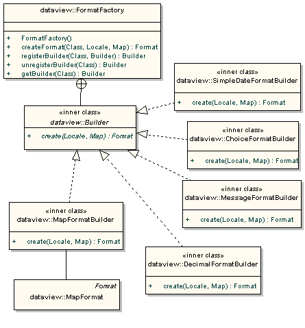
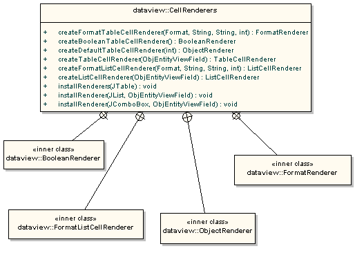
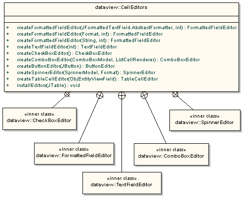
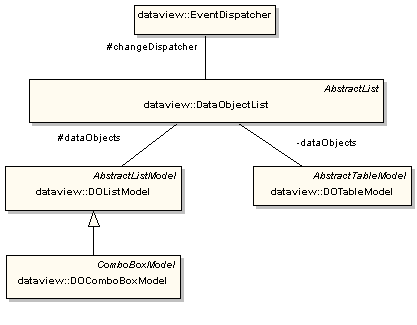

|
LOCAL DOCS
ONLINE RESOURCES |
| 13. DataViews
13.2 DataView Concepts 13.2.1 DataView Hierarchy The class diagram on the figure below captures the structure of Data Views and how they rely on the classes in the Cayenne subpackages. Single DataView object is the root of the hierarchy. It serves as a container for ObjEntityViews from one or more DataView configuration files. Just like entities in the DataMaps, ObjEntityViews can freely refer to each other whether they are defined in the same configuration file or different ones. The recommended practice is to store closely related ObjEntityViews in the same XML "module" and define several "modules" based on the criterion of such closeness. When you load the list of XML files into the DataView, all the relationships are resolved automatically and the ObjEntityViews share the same namespace (so they must have different names even if they are located in different XML files). The diagram also shows that DataView is associated with several classes such as EntityResolver, DataTypeSpec, FormatFactory. The instances of these classes participate in the process of loading actual Data View files. The main unit of any Data View is ObjEntityView. It always refers to an ObjEntity defined in one of the used DataMaps and defines various presentation rules for this entity. There can be several ObjEntityViews for an ObjEntity, each of them utilized by an application when appropriate. EntityResolver finds the corresponding ObjEntities by the names as the Data View is being loaded. Every ObjEntityView must have a name unique in the DataView context. ObjEntityViews contain fields called ObjEntityViewFields. They must be named uniquely within an ObjEntityView. The fields can be of two sorts. The regular "nocalc" fields reference ObjAttributes in the ObjEntity referred by the parent ObjEntityView. There may be several fields for a given ObjAttribute in the ObjEntityView. A field describes the following view parameters:
The other type of ObjEntityViewFields is "lookup" fields. They point to the fields defined in other ObjEntityViews so the actual values to display, edit, or select from come from those referenced fields. Such a lookup field corresponds to an ObjRelationship with the ObjEntity referred by this its ObjEntityView as a source and the ObjEntity referred by the lookup ObjEntityView as a target instead of an ObjAttribute. Next the field identifies which lookup ObjEntityView and which particular field it wants to use as a lookup. These dependencies are resolved when the data views are loaded into memory. Class LookupCache helps maintain and map to data objects lists of values used in lookup combo boxes and lists. Thus you can describe the rules of visual editing the relationships or make aggregated views base on the related entities. 
13.2.2 Field Data Types Cayenne defines the mapping between several Java Class types and JDBC types. It is convenient to use and sufficient in many cases but there are all sorts of situations when one would like to define more specific data types to make use of, especially for the presentation purposes. In many cases when Integer is used as a flag you would like to map it to Boolean. Or you may have a Money type or Date type that holds only year, month, and day values, and so forth. ObjEntityViewFields address that by providing an easily extensible system of data types often used in the business applications. This system takes care of converting values back and forth between Cayenne data types and application specific data types. It relies on two classes DataTypeEnum and DataTypeSpec, both of them can be extended to define new types of any sorts. While the entire thing may seem redundant at the first glance, actually, it is a powerful concept that can save a lot of time spent on the manual conversions. 13.2.3 FormatFactory FormatFactory shown on the next figure provides the means to create instances of the edit and display formats used by ObjEntityViewFields. There are several formats defined in the java.text package. In addition the dataview library defines convenient MapFormat somewhat similar to java.text.ChoiceFormat. instead of formatting doubles by inclusion in range criterion as ChoiceFormat does it maps a set of objects of any type to string values. For example you can map Booleans to "Sure" and "No way" strings or you can map String keys to some descriptive String values, etc. It is easy for users to add custom formats of their own. They should subclass FormatFactory and create new Builders for their formats. That done, all they need is to configure the display and edit formats in ObjEntityViewFields with the class names of their Format classes and the patterns (and, maybe, some other properties). 
13.2.4 CellRenderers and CellEditors The following figure presents the utility class CellRenderers and several ready-to-use cell renderers for different types of ObjEntityViewFields. They are used in JTables, JLists, and JComboBoxes. The methods defined in the CellRenderers class will save your time when configuring a JTable to render values of the types available for use with ObjEntityViewFields The purpose of CellEditors is the same as that of CellRenderers. The editors are used when there is a need to edit data in JTables and such. The convenient notion of DataObjectList is defined in the library. It is a specialized container to store Cayenne DataObjects (usually of the same type). It fires events when modified and DOTableModel, DOListModel, DOComboBoxModel wrap it and being configured with an ObjEntityView / Field are handy to provide access to these data objects with JTables, JLists, and JComboBoxes. In fact, they make the visual components data aware. 
13.2.5 Miscellaneous Features One more useful feature is a centralized EventDispatcher within the DataView class. It is used by the fields to fire the events whenever their values are changed. Thus the ObjAttribute/ObjRelationship modifications can be easily propagated to all the listening components. |
|
User Guide - version 1.1
TABLE OF CONTENTS:
5. Generating Classes with Ant
13. DataViews
|
| Copyright ©2001-2004 ObjectStyle Group |